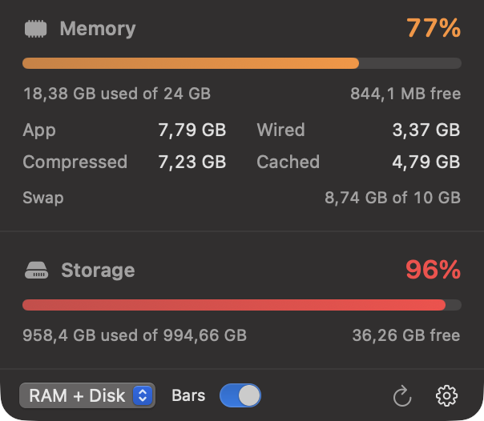

Two bars, one glance
RAM used and storage free sit right in the menu bar, labelled with the percentage and the GB left. Read the state of your Mac from across the room.
Free & open source · macOS 14+
MacosPanel lives in your menu bar and shows how much RAM and disk your Mac has left as two live bars. No Dock icon, no helper daemons, nothing to configure.
Native Swift · ~1 MB app · No telemetry, no accounts, no subscription

Click the bars for App, Wired, Compressed, Cached and swap — plus every local volume.
Features
RAM used and storage free sit right in the menu bar, labelled with the percentage and the GB left. Read the state of your Mac from across the room.
Bars shift colour as usage climbs, so a machine that is quietly running out of headroom announces itself before things get slow.
Prefer numbers only? Flip the Bars toggle and the menu bar item becomes a compact text label. Choose RAM, disk, or both.
Click the menu bar item for App, Wired, Compressed, Cached and swap — and used, free plus every local volume on the disk side.
Boot volume first, then any other mounted local disk, each with its own used and free figures.
No Dock icon, no windows, no notifications. Set the refresh interval to 1, 2, 5 or 10 seconds and let it run at login if you like.
Trustworthy numbers
MacosPanel reads the kernel directly — host_statistics64 for memory and
sysctl for swap — instead of parsing shell output. Memory usage follows the
same definition as Activity Monitor, so the numbers agree.
volumeAvailableCapacityForImportantUsage, so purgeable space counts as available.Install
macOS 14 Sonoma or newer. The app is ad-hoc signed; if Gatekeeper complains, right-click it and choose Open.
Grab MacosPanel.app from the latest release on GitHub.
Drag it into /Applications so login items work reliably.
Open it once. A menu bar item appears — enable Launch at Login from the gear menu.
# requires Xcode command line tools
git clone https://github.com/403access/macos-panel.git
cd macos-panel
./build.sh
cp -R build/MacosPanel.app /Applications/
open /Applications/MacosPanel.appBuilds with Swift Package Manager in a few seconds. No Xcode project needed.
Free, open source, and one menu bar item away.